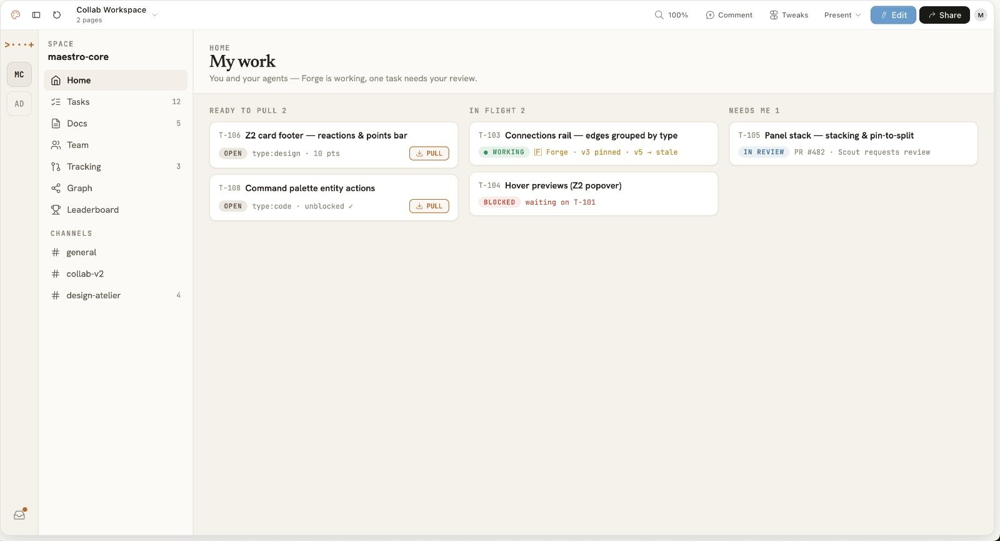
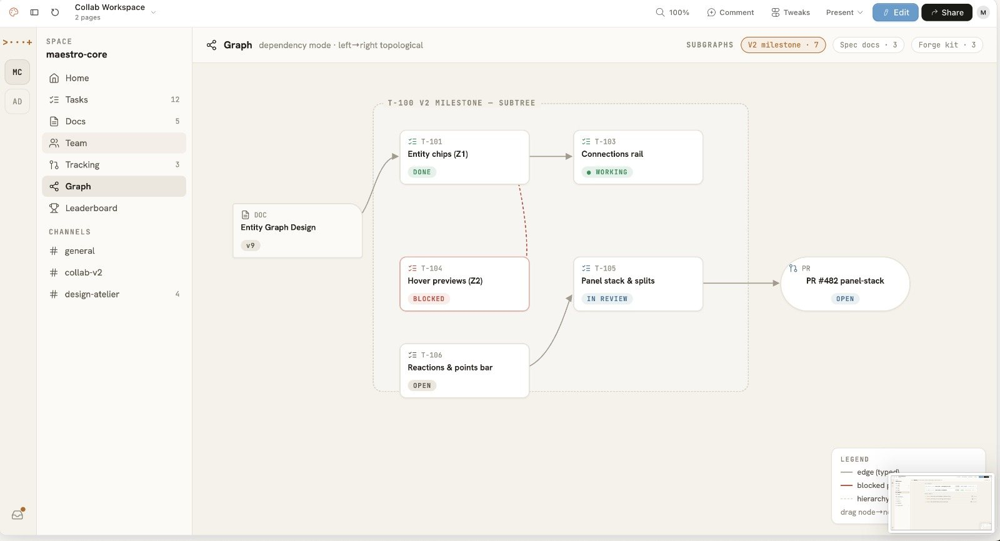

Useful without a hosted control plane.
Run the core system on your own machine or infrastructure.
Local-first agent orchestration
Maestro turns parallel coding sessions into a team you can actually read. You plan the work and hand it to Claude, Codex, or Gemini; then you watch what each one changes instead of babysitting a wall of terminals.
Bring the tools you already use
Movement I The workspace
A preview of the Maestro workspace, where people and agents share the same tasks, docs, and pull requests instead of working from separate copies.


Movement II The programme
Maestro is the execution system around your coding agents: the durable, inspectable layer that survives a closed lid, a dropped connection, a hand-off to another model.
Server-owned PTYs with offset replay. Close the lid, switch networks, reopen the browser; the stream restores exactly where it stopped.
Claude and Codex sessions resume through their own provider identifiers, not a faked universal ID that quietly loses continuity.
Break outcomes into nested tasks with dependencies, ordering, priorities, and acceptance criteria. The graph is a place to work, not a slide.
Reusable agent personas carry identity, model defaults, skills, and permissions. Coordinators delegate to workers, and you can see every hand-off.
Let Claude plan, Codex build, and Gemini review inside one task pool. Maestro carries the context between them so nobody re-explains the work.
A plain-language feed of decisions, diffs, hand-offs, and blockers, read straight from the agent transcript. The raw terminal is one click away.
Projects, tasks, and sessions live as inspectable JSON under ~/.maestro/. Nothing hides in a proprietary database, so there's nothing to migrate off and nothing holding you hostage.
Portable, multi-rule Spells and multi-scope Skills give agents reusable context and automation you can trigger across a whole workspace.
Agents run maestro themselves to create tasks, spawn sessions, report progress, and hand off. Humans and agents drive the same control plane.
Movement III The run
Every run gets an owner, a scope, and an evidence trail, so it stays legible even when five agents are moving at once.
Read how Maestro worksBreak an outcome into tasks, dependencies, and acceptance criteria.
Choose providers, models, roles, permissions, and working directories.
Agents work in real sessions while activity and handoffs stay visible.
Inspect changes, test results, decisions, and unresolved blockers before shipping.
Movement IV Programme notes
Run the core system on your own machine or infrastructure.
Keep orchestration separate from any single AI vendor.
Make activity, permissions, handoffs, and evidence easy to inspect.
Coda Get started
Maestro is under active development. Start with the repository, inspect the code, and run it on infrastructure you control.
Requires Node.js 18+, Bun, Rust, and the Tauri system prerequisites for the desktop app.
$ git clone https://github.com/subhangR/agent-maestro.git
$ cd agent-maestro && bun install
$ bun run dev:allWhat lands on disk
~/.maestro ├─ data │ ├─ projects.json │ └─ tasks.json └─ sessions └─ session_0184.json
Projects, tasks, and session records stay inspectable on your machine; it's plain JSON you can open in any editor.